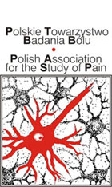

Psychologia bólu
Krzysztof Basiński
O kursie
- 30 godzin, 10 spotkań (czwartki, 10:15-12:30)
- http://kbas.gumed.edu.pl/bol
- k.basinski@gumed.edu.pl
Co trzeba zrobić żeby zaliczyć
- 2 kolokwia
- Prezentacja zaliczeniowa
- Ocena końcowa - prosta średnia z kolokwiów i prezentacji
- Punkty za ogólną bystrość (aktywność na zajęciach)
Tematy prezentacji
- Central pain syndrome
- Complex regional pain syndrome
- Ból w zespole jelita drażliwego
- Bóle głowy
- Ból nowotworowy
- Fibromialgia
- Ból porodowy
Literatura
- (Bud) Craig, A. (2003). A new view of pain as a homeostatic emotion. Trends in Neurosciences, 26(6), 303–307. https://doi.org/10.1016/S0166-2236(03)00123-1 link
- Fields, H. L. (2018). How expectations influence pain. Pain, 159(9), S3–S10. https://doi.org/10.1097/j.pain.0000000000001272 link
- Tabor, A., & Burr, C. (2019). Bayesian Learning Models of Pain: A Call to Action. Current Opinion in Behavioral Sciences, 26, 54–61. https://doi.org/10.1016/j.cobeha.2018.10.006 link
- Baliki, M. N., & Apkarian, A. V. (2015). Nociception, Pain, Negative Moods, and Behavior Selection. Neuron, 87(3), 474–491. https://doi.org/10.1016/j.neuron.2015.06.005 link
- Bushnell, M. C., Čeko, M., & Low, L. A. (2013). Cognitive and emotional control of pain and its disruption in chronic pain. Nat Rev Neurosci, 14(7), 502-511. https://doi.org/10.1038/nrn3516.Cognitive link
Literatura
Jeśli byłby problem z dostępem (paywall), piszcie mi maila!
Ból - podstawowe definicje (Taksonomia IASP)
Źródła

Ból
Nieprzyjemne doznanie sensoryczne i emocjonalne, powiązane z faktycznym lub potencjalnym uszkodzeniem tkanek, lub opisywane w kategoriach takiego uszkodzenia.
Uwagi do definicji bólu
- Niemożność komunikowania doznań bólowych nie oznacza, że pacjenta nie boli i nie wymaga on leczenia
- Ból jest zawsze subiektywny
- Ból składa się z dwóch komponentów:
- sensoryczny (boli nas noga)
- emocjonalny (cierpimy z powodu bólu nogi)
Uwagi do definicji bólu, cd.
- Ból często powiązany jest z uszkodzeniem tkanek ale nie zawsze
- Często ból nie ma jasnej przyczyny patofizjologicznej
- Najprawdopodobniej wiąże się to z zaburzonym funkcjonowaniem CUN
- Pain is in the brain
Ból jest subiektywny
- Jeśli pacjent mówi, że go boli - to znaczy że go boli. Najczęściej.
- “Aktywność receptorów bólowych i dróg bólowych w układzie nerwowym indukowana przez bodziec bólowy nie jest bólem. Ból to zawsze stan psychologiczny” (IASP Taxonomy)
Funkcje bólu
- Funkcja ucieczki – wrażenia bólowe powodują chęć natychmiastowego uniknięcia źródła bólu
- Ułatwienie leczenia – organizm szybciej dojdzie do zdrowia, gdy nie będziemy np. przeciążać bolącej nogi
Funkcje bólu
- Funkcja motywacyjna – uczymy się (na drodze warunkowania) unikać bodźców, które sprawiły nam ból w przeszłości
- Ból jest kluczowy dla przetrwania – osoby z wrodzoną obojętnością na ból mają krótszą spodziewaną długość życia
Ból receptorowy vs. neuropatyczny vs. nocyplastyczny
Ból receptorowy
- Ból, który powstaje w wyniku faktycznego lub możliwego uszkodzenia tkanek (z wyjątkiem tkanki nerwowej)
- Spowodowany jest (normalną) aktywacją nocyreceptorów (receptorów bólowych)
- Np.: rozcięcie skóry, złamanie nogi, opuchlizna, oparzenia, odmrożenia itd.
Ból neuropatyczny
- Ból spowodowany uszkodzeniem bądź chorobą somatosensorycznego układu nerwowego
- Np.: neuralgia nerwu trójdzielnego, neuropatia cukrzycowa, bóle fantomowe
Ból nocyplastyczny
- Ból spowodowany zmienioną (altered) nocycepcją pomimo braku faktycznego bądź możliwego uszkodzenia tkanek powodujących aktywację nocyreceptorów oraz braku choroby lub uszkodzenia somatosensorycznego układu nerwowego
- Trzecia kategoria, de facto obejmująca ból który nie jest ani nocyceptywny, ani neuropatyczny
- Np.: fibromialgia, kompleksowy zespół bólu regionalnego, ból w zespole jelita drażliwego, niespecyficzny ból dolnego odcinka kręgosłupa
Ból ostry vs. ból przewlekły
- Ból przewlekły to ból trwający dłużej niż 3/6 miesięcy
- Ból przewlekły to ból trwający dłużej niż spodziewany okres wyleczenia
- Ból przewlekły = choroba sama w sobie
- Problem chronifikacji
Inne pojęcia z zakresu badania bólu
- Analgezja - zmniejszenie odczuwania bólu
- Hiperalgezja - zwiększenie odczuwania bólu
- Allodynia - przeczulica, bodziec dotykowy odbierany jako bolesny
- Placebo - teoretycznie obojętne oddziaływanie zmniejsza ból
- Nocebo - teoretycznie obojętne oddziaływanie zwiększa ból
Nocycecpcja
Nocycepcja
- Aktywacja receptorów bólowych i dróg przewodzenia bodźców bólowych (pain pathways)
- Jeśli wszystko jest w porządku, skutkuje odczuciem ostrego bólu
- Proces stricte fizjologiczny (?)
Nocycepcja
- Nocyreceptory - receptory reagujące na informację bólową, obecne w skórze, mięśniach, stawach etc.
- Bodźce bólowe przewodzone są poprzez dwa rodzaje włókien:
- Aδ - z osłoną mielinową - szybkie przewodnictwo
- C - bez osłony - wolne przewodnictwo, tzw. “drugi ból”
- Zakończenia włókien w korzeniu grzbietowym nerwu rdzeniowego
Nocyreceptory
- Niektóre wyczulone specyficznie na różne typy stymulacji, np. ciepło, ucisk, oparzenia chemiczne itd.
- Receptory różnią się progiem aktywacji - niektóre (tzw. “ciche” receptory) potrzebują bardzo dużej stymulacji żeby się uaktywnić
Nocyreceptory
- Większość receptorów włókien C nie ulega habiutacji tylko sensytyzacji
- W trakcie przedłużającej się stymulacji bólowej aktywować mogą się dodatkowe, bardziej odległe receptory
- Nocycepcja może się utrzymywać, nawet jeśli nie ma już pierwotnego źródła bólu
Teoria bramkowania (Melzack, Wall)

Teoria bramkowania (Melzack, Wall)

Teoria bramkowania (Melzack, Wall)
- W swoim rozwinięciu teoria bramkowania mówi, że mechanizm bramki może być regulowany przez mechanizmy centralne
- Nie bardzo wiadomo jakie mechanizmy centralne
Transmisja informacji bólowej
- Z nocyreceptorów przez włókna Aδ i C do rdzenia kręgowego
- W rdzeniu pierwsze “przetwarzanie”
- Z rdzenia kręgowego do wzgórza (spinothalamic tract)
- Z wzgórza do kory
Transmisja informacji bólowej

Narzędzia oceny bólu
VAS (Visual Analog Scale)
NRS (Numerical Rating Scale)

FACES

FACES
Obserwacyjna skala FLACC
- Face
- Legs
- Arms
- Cry
- Consolability
- (Children’s Hospital of Eastern Ontario Pain Scale)
BPI
BPI

BPI